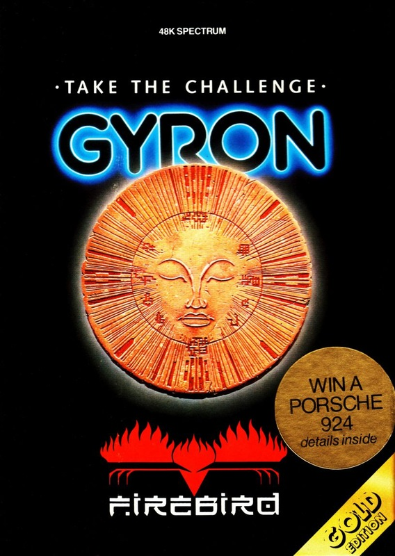
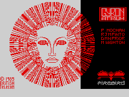
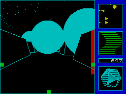
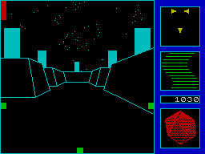

Gyron


{kind=link}

| Publisher: | Firebird |
| Price: | £9.95 |
| Year: | 1985 |
| Source: | CRASH, Issue 14 |

Gyron is described by Firebird as, ‘the most challenging computer game ever written’, and it has taken its four young programmers a year to write. It comes under Firebird’s ‘Gold Range’, and its fairly high price reflects both the work that has gone into its creation and its complexity as game and program. Typically, it is also quite hard to describe easily!
In brief Gyron can be described as a four dimensional maze game. The large maze is seen by the player three dimensionally, using excellent wire frame line graphics. In addition to the maze walls there are offensive towers which fire at your hedron and vast spherical balls which roll about the maze and give it its fourth dimension, for these balls are effectively moving walls of the maze. That’s putting it very simply!

The object of Gyron is to penetrate the defences of an enemy computer complex and thus to reach and destroy it. The computer architects that constructed the system were faced with the task of designing a defence system which though providing formidable resistance to a saboteur, would still allow access for purposes of reprogramming and repair, to authorised personnel. Faced with the problem of eliminating the computer scientists developed a project, whereby a ‘Hedroid’ (you) is dropped into the gate that opens periodically in the energy field above the maze. The Hedroid is a remote control robot (a revolving icosahedron for the technically-minded) which sends information back to its controller (the player of course). It is armed with a laser.
Once inside the maze the hedroid is faced with two interlocking defence systems, towers and balls. The balls are immune to the hedroid laser and kill on contact. The maze is divided into zones (indicated by the colour of the hedroid symbol on screen), and each zone has a cycle time which effectively controls the movement of the balls. Solutions to individual configuration problems are only available at certain times during cycles, and to the overall system (game) only four solutions are believed to exist; those used by the designers themselves. The towers are designed to restrict movement within the maze. They ‘point’ and fire in one of the four compass directions. However they can be affected by the Hedroid laser. If a tower is hit in the back it may retract, although some reappear instantly, and others may be linked so that as one tower retracts another appears elsewhere. Fire from the towers kills, and only may be avoided by passing under it hard by a wall, or by using a ball as cover.

up moving walls
The screen display consists of a large square view of the maze seen from ground level in full 3D. Balls and towers are seen as a solid blue. A green square at the base indicates sideways movement, and two green squares on either side indicate your position relative to the side passages which are shown by red bars. Once the side green squares are within a red bar it is possible to turn by moving in the direction until you meet the side ‘wall’, whereupon the picture cuts to face along the new passage. To the right of the viewscreen are four panels. At the top is a radar scan of the immediate area which shows towers and their firing direction and the moving balls. ‘You’ are always at the centre. This radar scrolls continuously as you move in the maze. Below it is a waveform damage indicator (bumping into walls causes damage). Below that is a time linked to the central computer. Finally there is a panel with a revolving hedroid which is colour coded to indicate the maze zone occupied by the hedroid.
Gyron is a hard arcade maze game, but it is as a thinking game that it really scores. To complete it there are only four possible solutions, and Firebird are so convinced that very few will ever do so, that they are offering a Porsche 924 motor car to the first person to solve it before October 21st 1985. An eliminating competition will be held should more than one correct solution appear.
Other interesting statistics include: a game cycle that only repeats after 100,000 years, hidden view 3D graphics, three colours per character square, and two games on one tape — the Atrium is an easier practice version of the main game. The program size means that there is only limited sound available, but fortunately Gyron is accompanied by the kind of detailed playing instructions that some other software houses would do well to look at.
CRITICISM

seen on radar as triangles
‘Now let’s get one thing straight — you are not going to defeat this game within five minutes of loading it. In fact I wouldn’t be surprised if no one defeated Gyron for a long, long time, otherwise why would Firebird be offering a Porsche as a prize? The graphics are breathtaking especially the 3D of the maze and towers. I particularly like the revolving icosahedron. The sound isn’t up to much, but the brilliance of the game makes up for that. The only thing that’s a bit off-putting about the game, apart from the loads of instructions, is that it’s so hard to play, but once you grasp the idea of what to do and how to control yourself, it’s just a matter of practice. You will need a lot of time and patience to get anywhere with it.’
‘Could any game be worth the price of a Porsche? My goodness, what an incentive to complete this game! You may think ‘no problem’ because you’ve completed so many maze games before. But this one is different, this one is unreal, this one is a nightmare! Four eyes, a logic-thinking nature and a desperate energy for speed and excitement are just a few of the factors needed to play this game. Never has there been a 3D planned maze like this before of such complexity; and it’s not just a question of finding your way around the maze either as you have to avoid the rolling balls and deadly towers that zap without warning. Your objective is to reach and destroy the central computer which controls all ball and tower movement — and it has to be done against the clock as well. Gyron is really very difficult to play but very enjoyable but once you grasp the principal ideas. Graphics are truly wonderful, the 3D perspective seems to me to be reality and the balls that move through the maze work with uncanny realism. A brilliant piece of programming that has been very highly polished and perfected. This is probably the type of game you will find in the arcades — yes, it is of that standard. Hyperbrill!’
‘A stunning atmosphere is produced from the loading screen onwards — as loading completes, the drawn head comes to life winks and spits out the hedroid that is ‘you’, then fades away to leave ‘you’ quietly revolving, waiting the commencement of the game. A marvellous opening to this graphically amazing game. The detailed graphics continue throughout, from the solid-feeling 3D maze (surely the most convincing 3D maze yet produced) to the animation of the rolling balls. The screen layout is exceptionally clean-looking and the side panels are all beautifully animated. The game itself is very tough, even dispiriting at first as you die within seconds (shot through the back usually), but then you realise the importance of the radar and the tower positions shown on it. Timing is important, as the balls only allow you to move from sector to sector at specified times — too late and it really is too late! But as an easy practice round, there is the Atrium version on side two which is much easier. Gyron is a remarkable game, as much puzzle as arcade and definitely with a dash of strategy. It should keep a player occupied for hours, days, months probably (maybe years for me!) — and I always wanted a Porsche too. Never mind.’
COMMENTS
| Control keys: | Cursor keys and zero to fire, but a user definable option is provided in a pre-loader |
| Joystick: | All major options, accessed through pre-loader, you can’t get back to the menu to change your mind though, due to the program size |
| Keyboard play: | Highly responsive, takes getting used to ‘momentum’ effect |
| Use of colour: | Simple use of colour in viewscreen, but effective, overall very good |
| Graphics: | Excellent 3D with perfect perspective feel and very smooth continuous animation in all details |
| Sound: | None |
| Skill levels: | Two games — hard and Porsche-worthy! |
| Lives: | 1 |
| Screens: | Continuous scrolling |
| General rating: | An astonishing program which requires quick arcade responses, a great deal of thought, and should provide hours and hours of satisfying frustration! |
| Use of computer: | 92% |
| Graphics: | 96% |
| Playability: | 90% |
| Getting started: | 92% |
| Addictive qualities: | 94% |
| Value for money: | 92% |
| Overall: | 93% |